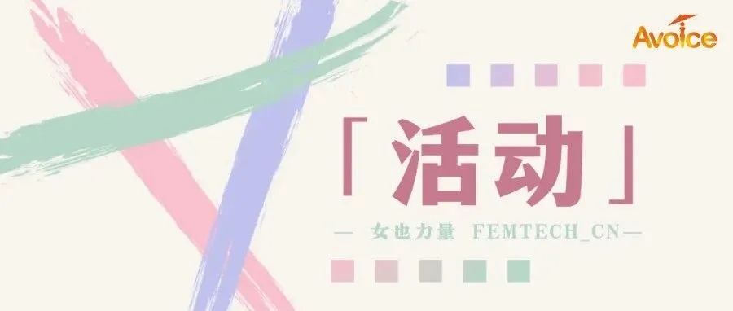
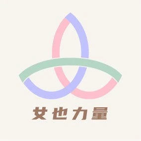
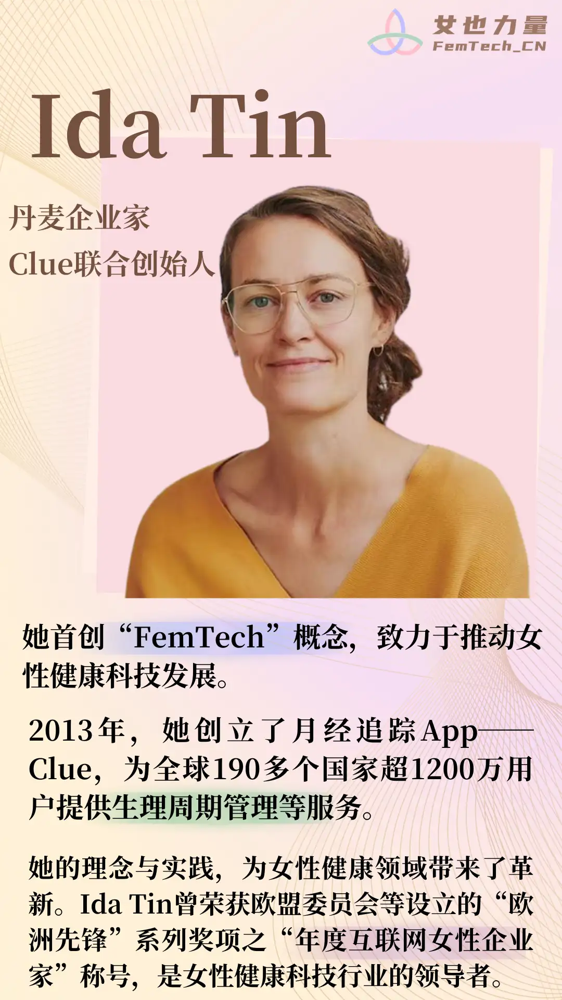
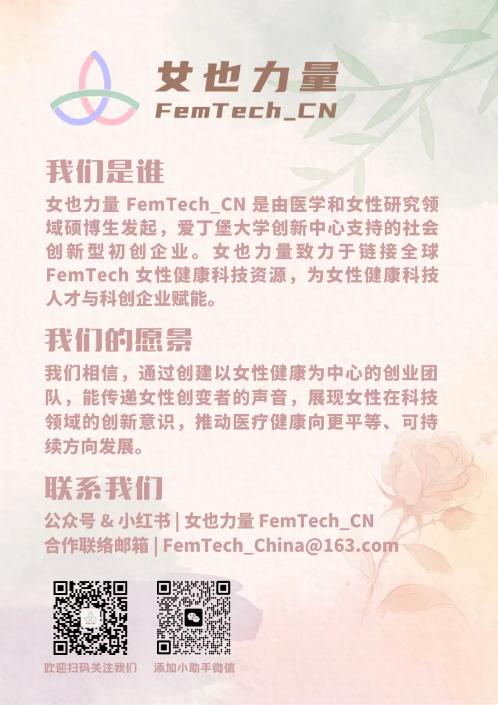

以下文章来源于女也力量 FemTech CN ，作者女也力量

女也力量 FemTech_CN 是由医学和女性研究领域硕博生发起，爱丁堡大学创新中心孵化的社会创新型初创企业。女也力量致力于链接全球FemTech女性健康科技资源，为女性健康科技人才和科创企业赋能。


✦ 女也力量
关注我们
推动女性健康发展
✦
✦
✦
✦
致每个她
对我来说，力量就是以积极的方式做出改变的能力。
——维多利亚·嘉丝蒂
妇女月特别活动
女也科技 X Ida Tin
2025年，正值《北京宣言和行动纲要》发表30周年，全球性别平等与女性赋权的呼声愈发高涨。在这个关键的历史时刻，女也携手FemTech概念创始人Ida Tin，共同推出三八妇女节特别活动，聚焦女性健康科技，探讨如何通过科技赋能女性，推动性别平等与女性自主权的全面实现。
✦
•
✦

线上对话Ida Tin：作为FemTech概念的创造者、Clue（月经追踪App）联合创始人兼CEO，Ida Tin将分享她的成长与创业故事，带你深入了解女性健康科技的全球趋势与未来发展方向。活动还将设置互动问答环节，与Ida Tin进行交流，分享你的见解与疑问，共同探讨女性健康科技的未来发展方向。
女性健康科技前沿洞察：从经期管理到疾病筛查，从生殖健康到更年期照护，FemTech正通过技术革新重构女性健康自主权。我们将深入探讨全球FemTech市场的现状与未来，揭示科技如何赋能女性健康。
线上线下同步直播：本次活动致力让每一位关注女性议题的朋友都能参与这场关于女性权利、平等与赋能的深度对话。线上直播打破地域限制，无论你身处何方，都能随时加入讨论。线下我们也筹备了活动场地，为大家提供面对面交流的空间，让关注女性健康的群体充分互动。亲临现场，沉浸感受热烈氛围，与志同道合的伙伴们思维碰撞，共话女性健康的未来。
